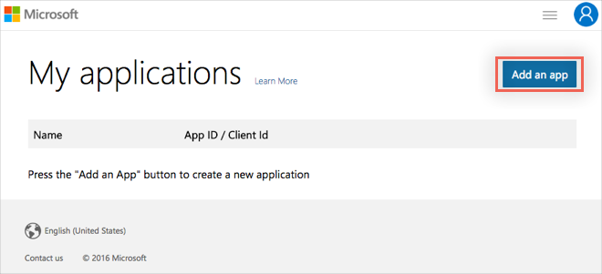
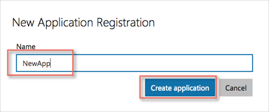
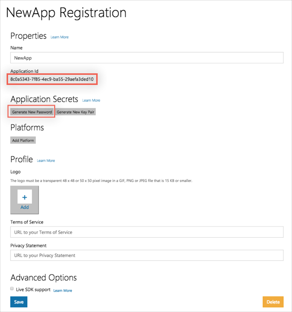
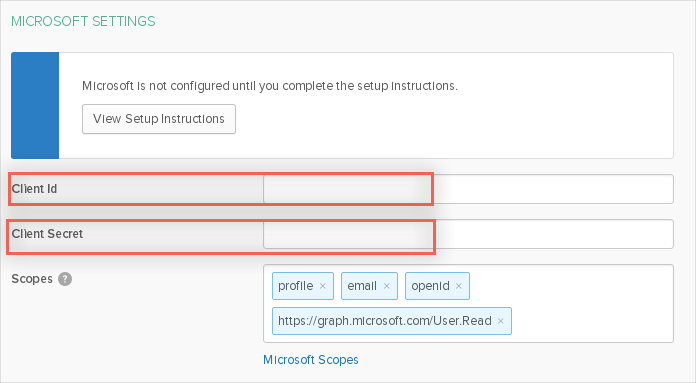
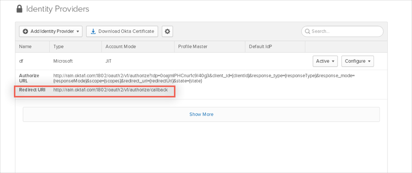
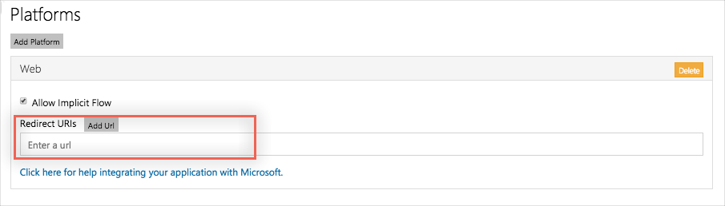

Log into your Microsoft account, here: apps.dev.microsoft.com.
Note: If you don’t have a Microsoft account, go ahead and create one. You can use your Okta email address.
After logging in, the My Applications page appears. Click Add an App:

A New Application Registration dialog appears.
Name: Enter a name for the new app (any text string).
Click Create application.

On the Properties page, leave all the default settings except:
Click Generate New Password: Make sure you make a copy of the new password, it is only displayed once in the UI, and you will need to enter it in Okta. Then click OK.
Make a note of your Application Id you will need to enter it in Okta.

In Okta, enter the Application Id you made a note of and the Password you generated in step 4 above, into the Client Id and Client Secret fields, respectively:

Click Add Identity Provider.
Once you have saved the configuration in Okta for the Microsoft Identity Provider, copy the Redirect URI from your newly created IDP configuration.

Now, go back to your Microsoft New Applications - Properties page (see step 4) and click the New Platform button.
Select Web, then enter the Redirect URI you copied in step 7 into the Authorized Redirect URIs text field:

Click Save.
The following table shows how attributes are mapped from Microsoft to the Okta AppUser.
| Graph DirectoryObject Property | Description | IdP AppUser Attribute Name |
|---|---|---|
| aboutMe | A freeform text entry field for the user to describe themselves. | aboutMe |
| birthday | The birthday of the user. | birthday |
| city | The city in which the user is located. | city |
| country | The country/region in which the user is located. For example, US or UK. | country |
| department | The name for the department in which the user works. | department |
| displayName | The name displayed in the address book for the user. | displayName |
| givenName | The given name (first name) of the user. | givenName |
| hireDate | The hire date of the user. | hireDate |
| id | The unique identifier for the user. | externalId |
| interests | A list for the user to describe their interests. | interests |
| jobTitle | The user’s job title. | jobTitle |
| The SMTP address for the user. | ||
| mailNickname | The mail alias for the user. | mailNickname |
| mobilePhone | The primary cellular telephone number for the user. | mobilePhone |
| mySite | The URL for the user's personal site. | mySite |
| officeLocation | The office location in the user's place of business. | officeLocation |
| onPremisesImmutableId | This property is used to associate an on-premises Active Directory user account to their Azure AD user object. | onPremisesImmutableId |
| onPremisesLastSyncDateTime | This date indicates the last time at which the object was synced with the on-premises directory. | onPremisesLastSyncDateTime |
| onPremisesSecurityIdentifier | Contains the on-premises security identifier (SID) for the user that was synchronized from on-premises to the cloud. Read-only. | onPremisesSecurityIdentifier |
| onPremisesSyncEnabled | true if this object is synced from an on-premises directory; false if this object was originally synced from an on-premises directory but is no longer synced; null if this object has never been synced from an on-premises directory (default). | onPremisesSyncEnabled |
| passwordPolicies | Specifies password policies for the user. This value is an enumeration with one possible value being DisableStrongPassword, which allows weaker passwords than the default policy to be specified. DisablePasswordExpiration can also be specified. The two may be specified together; for example: DisablePasswordExpiration, DisableStrongPassword. | passwordPolicies |
| pastProjects | A list for the user to enumerate their past projects. | pastProjects |
| postalCode | The postal code for the user's postal address. The postal code is specific to the user's country/region. In the United States of America, this attribute contains the ZIP code. | postalCode |
| preferredLanguage | The preferred language for the user. | preferredLanguage |
| preferredName | The preferred name for the user. | preferredName |
| proxyAddresses | For example: ["SMTP: bob@contoso.com", "smtp: bob@sales.contoso.com"] | proxyAddresses |
| responsibilities | A list for the user to enumerate their responsibilities. | responsibilities |
| schools | A list for the user to enumerate the schools they have attended. | schools |
| skills | A list for the user to enumerate their skills. | skills |
| state | The state or province in the user's address. | state |
| streetAddress | The street address of the user's place of business. | streetAddress |
| surname | The user's surname (family name or last name). | surname |
| usageLocation | A two letter country code (ISO standard 3166). Required for users that will be assigned licenses due to legal requirement to check for availability of services in countries. | usageLocation |
| userPrincipalName | The user principal name (UPN) of the user. The UPN is an Internet-style login name for the user based on the Internet standard RFC 822. By convention, this should map to the user's email name. The general format is alias@domain, where domain must be present in the tenant’s collection of verified domains. | userPrincipalName |
| userType | A string value that can be used to classify user types in your directory, such as Member and Guest. | usageLocation |